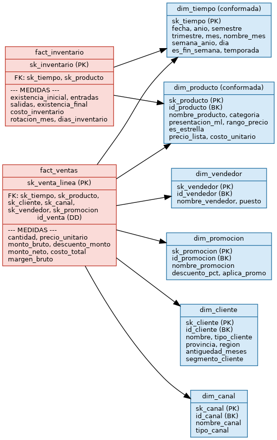
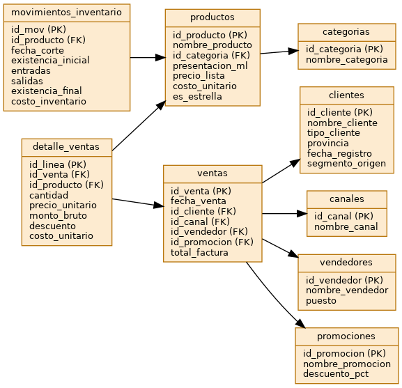

Proyecto 02 · Inteligencia de Negocios
Las Salsas de Lucho
Solución integral de BI para una PYME comercial: modelo dimensional, ETL reproducible, validación de calidad, tablero analítico y documentación lista para compartir.
PostgreSQL / SQLite
Python + pandas + SQLAlchemy
Streamlit + Plotly
6 vistas analíticas
Qué incluye
2Tablas de hechos
6Dimensiones
10Reglas ETL
17KPIs documentados
El repositorio contiene la fuente operacional, el esquema estrella, el ETL, el tablero y la documentación técnica. La página principal del tablero está diseñada para consulta local y el sitio sirve como portada para compartir el proyecto con tus compañeros.
Enlaces rápidos
Si GitHub Pages queda habilitado desde la rama o carpeta correcta, esta portada será el link compartible.
Modelo del proyecto

Esquema estrella con dos hechos: ventas e inventario, más dimensiones conformadas de tiempo y producto.
Modelo operacional

Fuente transaccional con clientes, productos, canales, ventas, detalle e inventario.
Resumen ejecutivo
- Las 3 salsas estrella concentran la mayor parte del ingreso.
- Mayoreo impulsa la facturación, pero algunas promociones erosionan el margen.
- La rotación de inventario muestra sobrestock en las líneas de baja rotación.
- La solución ya corre localmente en http://localhost:8501.